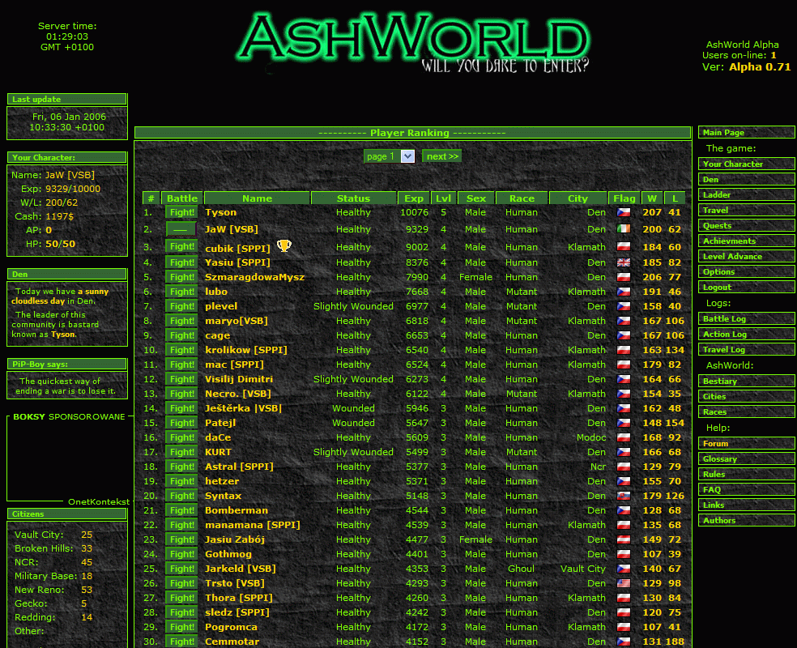
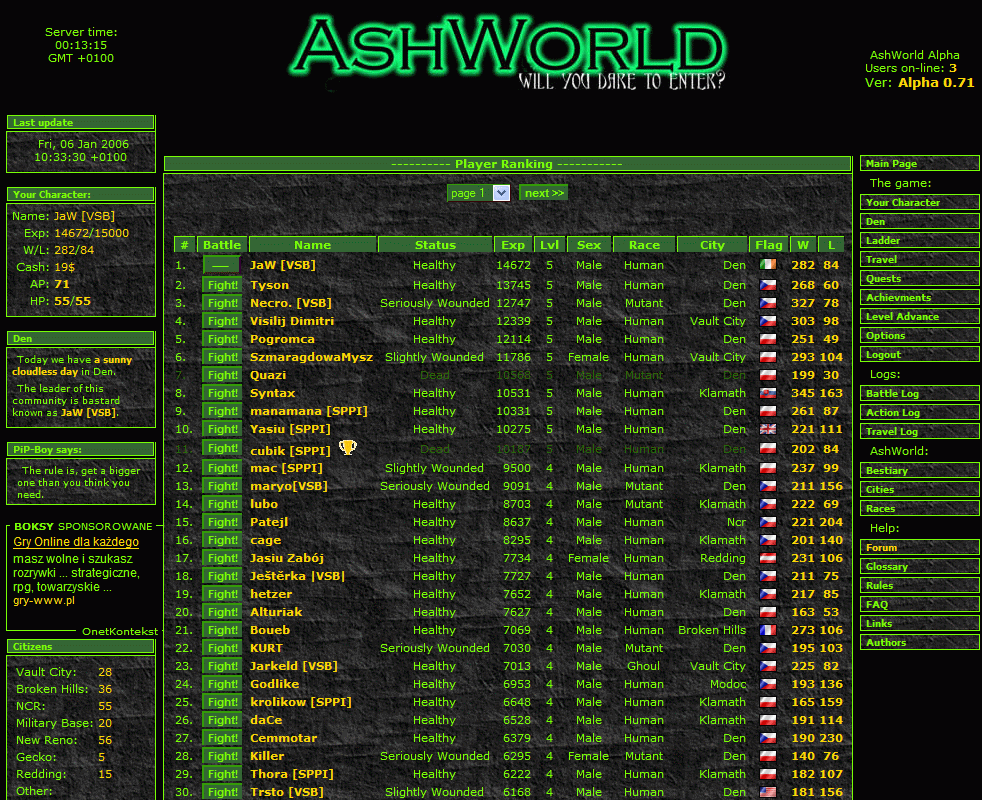
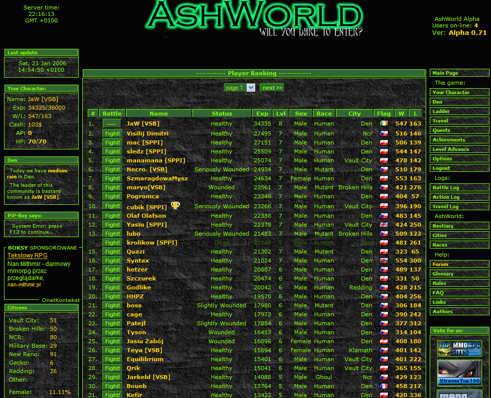
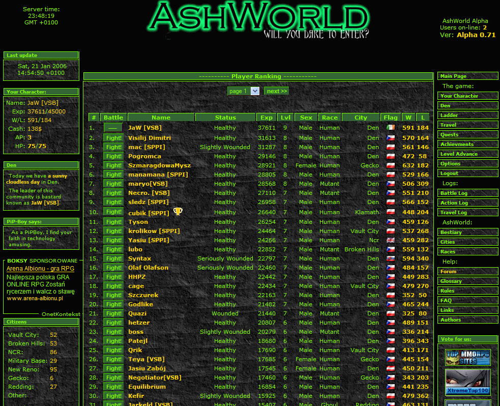
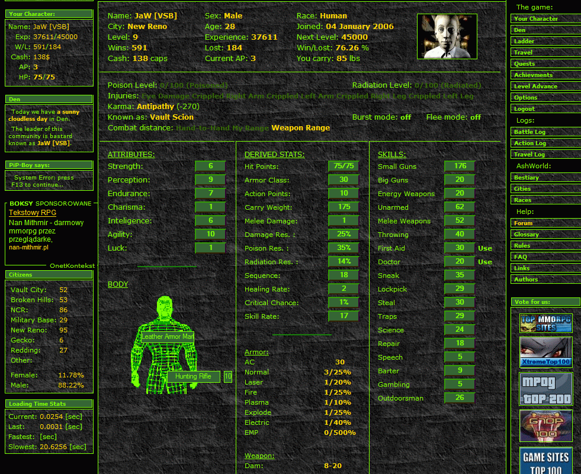
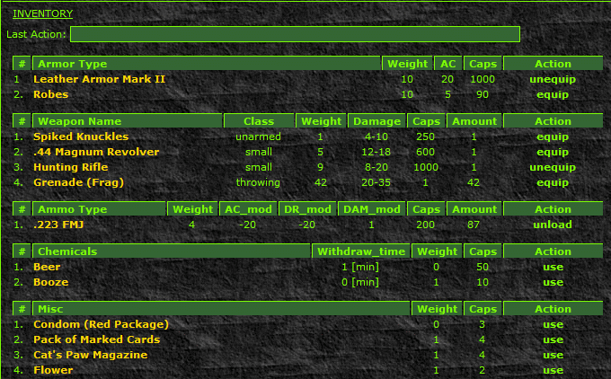

Jak probíhal Ashworld Alpha 0.71 Tournament
Začalo se 4.ledna a turnaj měl trvat 14 dní a tak jako vždy trval déle. Po třech čtyřech dnech se žebříček protřídil a na vrchol se vyšvihla česká dvojka Tyson a JaW.

Tyson zaexperimentoval se svojí postavou a vyšlo mu to na 100%. Místo aby dal body do inteligence, vrazil celých 10 bodíků do štěstí a to se vyplatí, protože si hned na začátku vygambloval na jednorukém banditovi u Becky v Denu slušnou sumičku, za kterou si pořídil to nejlepší vybavení co se dalo na pultech sehnat (bohužel v současném turnaji 0.72 gambling nefuguje, protože byla prý ve vzorci nějaká chyba).
Asi po týdnu se objevil problém, stejný jako o Vánocích, zaplacený webhosting překročil limit v přístupech za měsíc a poskytování služeb bylo pozastaveno do dalšího měsíce. Naštěstí se během tří dnů vše vyřešilo zaplacením hostingu s vyšším limitem a turnaj tedy mohl dál pokračovat. Po této odluce jsem přešel do vedení a do konce jsem ho už nepustil.

Hned ze začátku jsem si pořídil leather armor a spiked knuckles, co nejrychleji to šlo dokoupil magnum revolver a později leather armor Mk.II a hunting rifle, která mi zůstala až do konce. Proč jsem si nekoupil, tak jako ostatní, combat armor nebo power armor, když jsem byl tak úspěšný? Jednoduše proto, že i když jsem vyhrával převážnou většinu soubojů, nebyl jsem schopen našetřit ani zátku navíc. Dokonce se mi ke konci stalo, že jsem přišel o všecny náboje a musel jsem použít, tak jako na začátku, spiked knuckles, abych si mohl koupit náboje. proto jsem na slabší souboje znovu začel pouzívat magnumku, protože munice do ní byla podstatně levnější. Ke konci už jsem musel velmi pečlivě zvážit na koho zaútočím a na koho ne, protože se po pustině začaly potulovat lovci s daleko lepším vybavením než jsem měl já, power armor, combat armor nebyl vyjímkou. Panzor jackhammer, combat shotgun, gatling, to byly zbraně, se kterými se moje stará rezavá lovecká puška nemohla rovnat.
Čtyři dny před koncem turnaje si Tyson vzpomněl, že měl nějakou postavu v jakési textovce AshWorld a začal dohánět náskok, který po dvou týdnech nehraní ztratil. Zašel k Becky, nějakou dobu trápil jednorukého banditu, pak zašel do obchodu a nakoupil si power armor a combat shotgun. Po tomto víkendovém nákupu začal v AshWordu řádit takovým způsobem, že se dostal během několika dní z 24.příčky v žebříčku až na konečnou příčku pátou a nebýt konce, ještě by mi bylo pěkne horko.

Během tohoto turnaje se stala ještě jedna velmi podstatná věc. Mutanti mohli obléci zbroj. V té době se tak stala z lovců lovná zvěř. Mutanti totiž mají od přírody odolnost na poškození, kdežto člověk ani ghoul ne. Do té doby byli mutanti lehká kořist. Stačila nějaká obyčejná střelná zbraň a bylo od mutanta pokoj. Tímto se však stal z mutantů velmi silný protivník (z toho důvodu jsem si vybral pro další turnaj mutanta, a jak se ukazuje, zatím mi to vychází)
Ashworld Alpha 0.71 Tournament - Konečné pořadí:
1.JaW, 2.Visilij Dimitri, 3.mac, 4.SzmaragdowaMysz, 5.Tyson.
Bohužel nemám screenshot v den, kdy turnaj zkončil, poslední jsem udělal den před koncem.

Tady je moje vítězná postava a její inventář.


Několik rad pro ty, kteří se chtějí pohybovat v žebříčku více nahoře než dole:
Tvorba postavy:
Napřed si promyslete, co s vaší postavou vlastně chcete dělat. Jestli se specializovat na boj zblízka nebo na dálku. Jestli si vyberete postavu na dálku, dejte jí co nejvyšší Perception (vnímání). Jestli volíte bijce, tak dejte vše na sílu a obratnost. Přesně tak jako ve Falloutu. Na charisma se vykašlete, protože vám jen sníží ceny v obchodech. Většinou se v AshWorldu považuje za podřadné i štěstí (Luck), protože má vliv jen na hazardní hry a jak často budete způsobovat kritický zásah. Pokud si nastavíte tu nejvyšší hodnostu, budete mít moře peněz z hazardu, ale musíte je ubrat jinde. Agility (Obratnost) si u každé postavy nastavte na maximum, protože AW je hra hlavně bojová a určuje kolikrát budete za kolo útočit, což je ve hře asi nejdůležitější věc. Volba rasy mezi mutantem, člověkem nebo ghoulem je taky důležitá, taže pokud budete chtít ostrostřelce, volte člověka (PE 10) nebo ghoula (PE dokonce 13). Jako bitkař je nejvhodnější mutant (ST 13, EN 12).
Art of War:
Počítejte, že ze začátku budete prohrávat, než budete vědět, na které soupeře máte a na které ne.
Jestli je vaše postava člověk, nezkoušejte porazit mutanta, je to plýtvání drahocenými akčními body. Zaútočte proto na člověka nebo ghoula s nejvyšším počtem životů. Když bude míc navíc i více zkušeností než vy, jen lépe, dostanete za jeho zabití více zkušeností. Když ho neporazíte, zkuste jiného protihráče o stupínek níž. Jakmile získáte cca 2000 zátek, odejděte z pouště do města. Ne dříve, aby se vám nestalo, že pak nikoho nebudete moci porazit, protože všichni budou mít lepší vybavení nez vy. Ve městě nakupte okamžitě nejakou zbroj a zbraň, pokud možno ty nejlepší.
Jestli hrajete za mutanta, útočte na mutanty. Platí stejné pravidlo jako u lidí: útočit na nepřítele s nejvíce životy a zkušenostmi. V poušti zůstaňte do té doby, až budete vědět, že si budete moci ve městě koupit dobrou výbavu. Doporučuji cca 3000 zátek.Nezapomeňte, že jste v poušti od lidí neporazitelní, ale ve městě už to tak nebude.
Velmi důležitá je špionáž. Proto byste se měli pohyhovat na všech možných forech a zjišťovat informace o nepříteli, lokacích, obchodech a o zboží v nich.
S tím souvisí i šetření AP jak to je jen možné. Proto, jestiže už chcete z města na chvíli vypadnout do jiného, tak jen proto, aby jste si tam něco koupili. Nezapomínejte, že kazdý ztracený AP je sposta ztracených zkušeností a zátek.
Provokování lidí na forech je také velmi účinné, protože vy potřebujete, aby se na vás soustředilo co nejvíce lidí a útočili na vás (pamatujte si, když prohrajete, neztratíte nic, při výhře naopak dostanete zdarma zátky a zkušenosti).
Sledujte battle log a reporty z vyhraných i prohraných soubojů. Poznáte v čem jste slabí a budete vědět jestli koupit příště lepší zbroj nebo zbraň.
Pokud můžete, často se logujte a léčte si postavu (na polomrtvou postavu nebude nikdo útočit => zbytečně přijdete o zkušenosti)
Netvořte si více jak jednu postavu. Gamemaster na to stejně časem přijde a smázne vám je bez varování obě.
Nevyužívejte chyb a okamžitě je hlaste. Vyhnete se zase smazání vaší postavy.
Je mi jasné, že jsem si tímto článečkem pěkně nasral za krk a nebudu už s takovým přehledem vítězit, takže až mě budete kuchat bojovým nožem, vzpomeňte si na mě jako na dobrosrdečného a milého chlapce, který vám chtěl pomoci.JaW